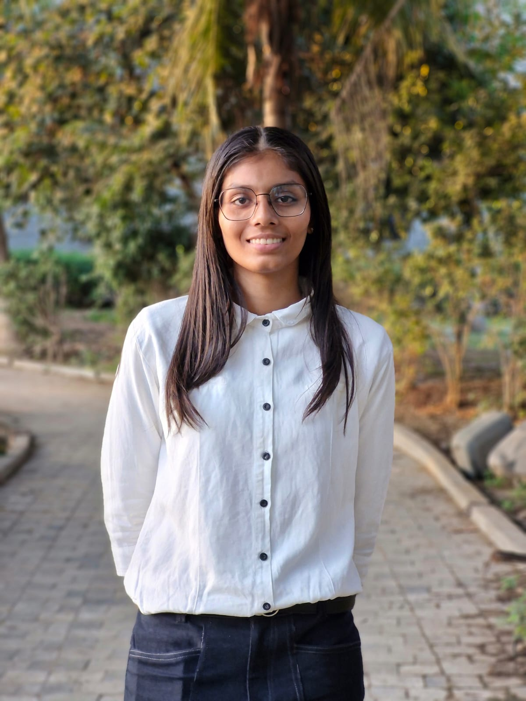

Welcome to My Portfolio!
I am Urja Gajera, a passionate computer science and engineering student at CSPIT, CHARUSAT. I love building creative solutions and exploring the world of technology.
Skills
- Proficient in HTML and CSS for building responsive, interactive websites.
- Strong foundation in C++ and Python for problem-solving and logic building.
- Focused on Frontend Development with plans to dive deeper into AI/ML.
- Hands-on experience in experimenting with Robotics blending hardware and software.
Interests
- Web Development - creating engaging and functional digital experiences.
- Robotics & Smart Systems - blending hardware and software to build intelligent solutions.
- AI/ML - exploring how intelligence can solve real problems.
- Always curious to learn new technologies and build creative projects.
Hobbies
- Drawing - expressing creativity through art.
- Karate - Purple Belt, showcasing discipline and focus.
- Volunteering - actively contributing to events and communities.
- Hackathons - love collaborating, learning fast, and solving real challenges.